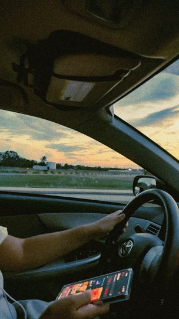
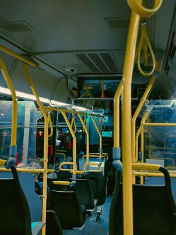

Photography Portfolio
Welcome to my photography page where I share my passion for capturing moments.
| Image | Description |
|---|---|
|  | This photo was spontaneously captured near Wilson Point. The moment held a certain tranquility that I felt compelled to preserve. In editing, I aimed to infuse my own thematic touch, steering away from the conventional to embrace a slightly gloomy yet peaceful ambiance. The subtle interplay of shadows and muted tones conveys a serene, almost contemplative mood, inviting the viewer to pause and immerse themselves in the quietude of the scene. |
|  | The inspiration for this piece stemmed from a desire to create a cinematic theme. I envisioned a palette that would evoke the richness and drama of film, blending a touch of realism with artistic flair. The colors are deliberately chosen to heighten the sense of narrative, casting an almost storybook quality over the scene. It's a blend of nostalgia and modernity, capturing the essence of cinematic artistry in a single frame. This work reflects my ongoing exploration of how color and composition can transform an ordinary moment into something extraordinary and film-like. |